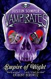
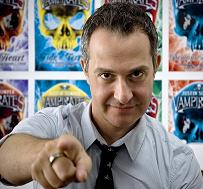

My Copy of the Interview, Chat and ContestWith UK Author Justin Somper by Bitten By Books
Posted under Chat, Contests, Interviews, Site News by Site Hostess on Friday 5 March 2010 at 1:03 pm

A big welcome to our readers today! Be sure to read to the end of the interview to find out how to WIN the fabulous prizes being offered up.PLEASE NOTE: This is not a fixed time event, the post just goes live at 12:00 pm Central. You can stop by any time during the day or evening and leave your questions and chat. For those visiting from outside of the US, here’s the time conversion. We are in the Chicago time zone: http://www.timeanddate.com/worldclock/
PLEASE KEEP SPOILERS TO A MINIMUM. Not all of the readers today have read Justin’s books.
Interview:
Hi Justin!
Welcome to Bitten by Books, we are excited to have you here today!
I would like to thank you taking the time to join us for the question and answer session with our readers. It has been very interesting to get to know more about you and what makes you tick as a writer! Readers, if you haven’t done so already please stop by and get your copy of Justin’s latest release Empire of Night.
BBB: Can you give us a more in depth look at the Vampirates series and and the storyline that drives it?
JS: The story begins 500 years into the future but it’s not the future we are expecting or hoping for! There’s been global warming and sea-level rise and with the expansion of the oceans has come a new dawn of piracy. The oceans are teeming with pirate ships and some other, more mysterious, vessels. On the coast of Australia, twins Connor and Grace Tempest are orphaned, aged fourteen, when their dad the lighthouse-keeper Dexter Tempest dies. Soon afterwards, Connor and Grace set out to sea in their dad’s boat but are caught in a freak storm. They are shipwrecked and almost lose their lives in the cold, churning water. By the time they are rescued, they have been separated and night has fallen. Connor is rescued by one of the more notorious pirate ships - The Diablo, captained by legendary seadog Molucco Wrathe. Grace, meanwhile, is “rescued” by Midshipman Lorcan Furey of The Nocturne, a ship which has been sailing, largely undetected, through time with its crew of the undead. As the story continues, first in DEMONS OF THE OCEAN and then in the other books in the sequence, Connor becomes a prized member of the pirate crew and makes strong friendships and alliances within the pirate world. More surprisingly, Grace forges equally powerful connections to the mysterious Vampirates and comes to regard them as “more sinned against than sinning”. From the end of the first book, brother and sister find themselves on opposite sides of this futuristic, post-apocalyptic world and the rift between them seems to grow only bigger. The pirates start to hunt the Vampirates in earnest and the Vampirate world splinters into different factions. In the fourth book, BLACK HEART, we learn that it was no freak storm which hurled Connor and Grace Tempest into this watery world. They were always a part of it, through their true parentage which is only now revealed.
BBB: How many books are planned in the Vampirates series?
JS: My current UK and US contracts are for six books. In the UK, I’m also contracted for an extra book which delves into the stories behind some of the key characters. The fifth main novel in the sequence, EMPIRE OF NIGHT, is just out and I’m currently plotting the next book which may the end of the sequence. Or not!
BBB: Mixing vampires and pirates is an unusual premise and isn’t something anyone’s done before. What inspired you to bring vampires and pirates together in one story?
JS: It all began with the word VAMPIRATES pretty much dropping into my head one day. A veritable “Eureka!” moment. I had shivers up my spine as I knew that, in many ways, this was “the big idea” I’d been waiting for as a writer. It was also quite scary though because, at that point, I knew very little about vampires and absolute zilch about pirates and I knew I’d have to get up to speed on both to find out the right way to blend them together. It was intimidating, but exhilarating, confronting these challenges as a relatively new author.
BBB: In a story featuring pirates and vampirates, who are The Bad Guys?
JS: In my books, you’re not defined by your “profession”. There are good characters who are vampirates and “bad” characters who are pirates. My starting point is that we all have appetites - whether it’s for fame, fortune, adventure, romantic gain or even blood. Having these appetites doesn’t necessarily make you evil; what’s important is how you go about satisfying that appetite and the way you interact with others who may stand in your way. You’ll see that my vampire characters have a variety of ways in taking blood. Some, like Sidorio have a seemingly unquenchable thirst and go straight for the thorax! Others, like Lola, have a more sophisticated palate and prefer to drink from antique glasses whilst others, in the more benign realm of the Nocturnals, have a partner donor on whom they sup once a week.
BBB: One of your UK reviewers, commented “Before Edward and Bella, there was Lorcan and Grace” while another said “Lorcan is far sexier than Edward”. How do you manage having another high-profile mortal girl/vampire boy romance and how do you feel about comparisons between Lorcan and Edward?
JS: Well, technically that reviewer is right in that my first book was published ahead of TWILIGHT so Lorcan was breaking a mortal girl’s heart sooner! I’m flattered by the comparison. Obviously TWILIGHT is now a complete cultural phenomenon so all us vampire authors kind of owe Stephenie Meyer a debt of gratitude. Lorcan may not be as well-known as Edward yet but he’s certainly one of my most popular characters, especially amongst female readers. I think that I’m writing for a slightly different age-group to Stephenie and also my fanmail suggests that I have an even split between male and female readers. Grace and Lorcan’s relationship is only one aspect of the books but, undoubtedly, a key one. In EMPIRE OF NIGHT, it is under threat because rival teen vampire Johnny Desperado is back charming Grace. I tend to avoid reading or watching material which is treading a similar path to my own writing to keep a stretch of clear water (no pun intended).
BBB: Another UK critic has said that “Lady Lola Lockwood (Black Heart) makes Cruella de Ville look like Mary Poppins and Sidorio’s ruthless deeds turn your blood to ice.” You seem to particularly enjoy writing villainous characters. What have you got to say for yourself?
JS: I confess that I do! I think in the earlier books in the sequence I maybe shied away from some of the darkness but latterly I have completely embraced it! By the time I’d finished the third novel, BLOOD CAPTAIN, I realised that I was lacking a really villanous female vampirate. That was the moment of Lady Lola’s dark birth and I haven’t looked back since. I think the addition of Lola and, in particular, her interaction with Sidorio has given the sequence a new injection of dark fun and energy. In EMPIRE OF NIGHT, I really like Lola’s scenes with Grace. She’s the world’s worst stepmother!
BBB: The VAMPIRATES books are currently published in 34 countries and 24 different languages. They have swiftly racked up sales in excess of 500,000 in the UK and Ireland alone and enjoy bestseller status in countries as diverse as Spain and Poland. What does this kind of success mean to you?
JS: The key thing as a writer is, firstly, to be able to keep writing. VAMPIRATES has enabled me to do so and to keep writing about a bunch of characters that I still feel highly intrigued by almost a decade after I wrote some of the first chapters. Obviously I am delighted with those stats but what really brings it home is when you get out and about. Traveling to the other side of the world and finding my books on the shelf in an Australian bookstore was a huge high. Similarly, during my first US book tour, it was wonderful to meet school librarians in Texas whose students were enjoying my books. That really brings it home to me how far these books have travelled. That and chatting to my readers through my blog every second week.
BBB: Talking of your blog, how do you feel that the digital age has changed the relationship between authors and their readers?
JS: In a rather fundamental and fun way. I really enjoy the level of dialogue I have with my readers through my blog, twitter and sites such as bittenbybooks! It’s really helpful to know which characters and storylines people are responding to and it’s also entertaining to have them try to second-guess me. Sometimes they are bang on and I have to say nothing! I like the immediacy of feedback too. My book was published today in the UK but I had a tweet yesterday from a fan who had already read it and wanted to know when she could get the next one. That kind of feedback makes me feel I must be doing something right.
BBB: What are the most challenging and the most rewarding aspects of writing?
JS: I’m always setting myself fresh challenges with each new book. I want the story to be more compelling each time, he jeopardy to be greater, the pace to be tighter etc. And each time I kind of take stock of the key characters and think how I’d like them to develop this time. Of course, in reality, they often develop of their own accord. The most rewarding aspects are when you feel you are closing the gap between your original vision and the finished book. With the last two VAMPIRATES books, BLACK HEART and EMPIRE OF NIGHT, I’ve pretty much achieved this. The other really rewarding aspect is talking to readers around the world, whether in person when I’m on tour or through my regular blog at vampirates.co.uk.
BBB: If you could have the Vampirates series made into a movie who would your dream cast be?
JS: My agent is currently in talks with a couple of movie producers so it would be churlish of me to start casting it at this stage! In reality, as the author of the books, I wouldn’t have much say over the actors involved and I’d be open to a director bringing their own vision to the project. Books and movies are very different media.
BBB: What are your top 3 favorite paranormal books and movies?
JS: In the past year, I’ve really enjoyed LET THE RIGHT ONE IN and ORPHAN (not sure if that qualifies but it was tense!) and also, on TV, TRUE BLOOD.
BBB: What character (s) in any of your books is most like you?
JS: They are all kind of like my kids, which is to say that they all have elements of me in them. Which is fine when you are talking about the more regular human characters, like Bart say, but not so good when you look at characters like Sidorio and Lady Lola. But the latter two definitely share some elements with me. There, I’ve said it!
BBB: What is the most ridiculous thing that you have thought about doing to any of your characters but never did?
JS: Generally, the more outrageous ideas get included rather than excluded from the books. I enjoy pushing the envelope both in terms of the characters’ dialogue and actions. A longtime fan recently told me he was shocked by Lady Lola bathing in blood in BLACK HEART but this seemed perfectly natural to me, within the world of the character.
BBB: How do you keep track of your world building?
JS: With minimal notes and just trying to keep it as much in my head as I can. Sometimes, I can go wrong but I have a great team around me who generally spot it when I do. For instance, in EMPIRE OF NIGHT, when Lola comes back to life, I wrote about her violet eyes opening (I was thinking about Elizabeth Taylor). My feisty UK editor Venetia pointed out that hitherto Lola’s eyes had been brown. I considered changing the colour - because I have a lot of characters with brown eyes - but in the end I didn’t. In broader terms, I love pushing out the world of the story farther each time. I’ll give you another example from EON. In all the books thus far, the pirate characters always gather in Ma Kettle’s Tavern but in the new book, I gather the pirates in an entirely different place - The Full Moon Saloon (I borrowed the name from a bar sign in Philly on my last book tour!). One of the young pirates is incensed that they’re not at Ma Kettle’s and i have his captain say to him, “there ARE other pirate bars you know!” That was fun for me and, I hope, for hardcore fans.
BBB: What do you feel are the benefits of the new electronic readers such as Kindle 2 or Sony Digital Book Reader
JS: I think that any media which encourages people to read, write and share stories is a good thing. I’m excited about the iPad. But for me the book is an unbeatable object. I love the feel, weight and smell of them, especially paperbacks.
BBB: What impact do electronic readers create on the bottom line for authors in the end? Do you feel they have a negative impact or positive, or no impact at all that you can see?
JS: It’s too early to tell, I think. We’re in the “suck it and see” phase. We’re currently making available a free e-book of the first VAMPIRATES novel, DEMONS OF THE OCEAN through www.vampirates.co.uk. Hopefully, this is a good way of capitalising on digital media to bring the sequence to the attention of new readers, who might then explore it in other formats.
BBB: I read in an interview that as a child, one of the things you wanted to be was the 5th member of ABBA. What’s your favorite ABBA song?
JS: Knowing Me, Knowing You - it was the first music video I ever saw. The snow. The fur-coats. The bittersweet Scandinavian ennui. Such glamour.
BBB: Do you plan on doing any adult series, or are you sticking to YA?
JS: It all comes down to the ideas I get - they are what dictate the audience I write for. If I had an idea that I thought would work best for a strictly adult audience, I’d go fir it. Having said that, I feel very comfortable writing for this age-group of readers and picking up a few adult fans along the way.
BBB: Was there a reason that you started your story in the year 2505?
JS: Absolutely. I chose to set my story in the future for several reasons. One was that I thought that I could make a subtle point about global warming and sea-level rise and that this would provide a certain logic to a new dawn of piracy. Another was to enable me to have strong female protagonists on the pirate side of the story (there aren’t too many famous female pirates in history). I also wanted to confound expectation and I guess everyone would expect a story like this to be set in the past. Finally, I guess I thought it would give me an element of control over the world - rather than feeling that I had to tie it into a specific historic era.
BBB: Have you ever thought about having a singer record your Vampirates shanty? (I’m thinking someone with a unique voice like Sia or Kate Bush). It would be a fantastic addition to the website to have the song playing in the background as people explored.
JS: I always perform - but never sing - the shanty at the start of my public events. And, on my audiobooks, Daniel Philpott sings it to a tune he worked out himself. You’re right that it is a central part of the world of my story so it would be great to have another recording of it at some point.
BBB: Do you have any upcoming appearances? If so where can our readers stalk errr find you?
JS: I’m about to go on tour in the UK and will be doing an event this very Sunday in London. In September, I’ll be back in the US for my second tour. A great number of my events are for invited audiences at schools or libraries but we always post up details of my public appearances at http://www.vampirates.co.uk/events/EventDates.

Now readers a few questions for you!If you HAVE read my books already, who is your favourite character and why?
If you HAVEN’T yet read my books, which of my ships do you think you’d prefer to sail on:
THE DIABLO - A notorious pirate ship, captained by Molucco Wrathe - no Vampirates allowed!
THE BLOOD CAPTAIN - a large, unruly ship of Vampirates, full of rampaging bloodsuckers, captained by Sidorio.
THE VAGABOND - a smaller, more connoisseur ship, captained by Lady Lola Lockwood, where the blood is kept in wine bottles belowdecks and served in antique Venetian glasses.
THE NOCTURNE - captained by the nameless and faceless Vampirate Captain, where Vampirates are each partnered with a donor from whom they drink blood once a week on Feast Night.
¨¨¨°º©©º°¨¨¨¨¨¨°º©©º°¨¨¨¨¨¨°º©©º°¨¨¨¨¨¨°º©©º°¨¨¨¨¨¨°º©©º°¨¨¨¨¨¨
Comment by van pham — March 5, 2010 @ 1:08 pm
I haven’t read your series yet but it sounds really interesting and will definitely check it out
I think i would prefer to sail on the The Vagabond
Comment by Justin Somper — March 5, 2010 @ 1:24 pm
@ van pham
You are clearly a sophisticate. Hopefully you are a female as Lola’s ship has an only female crew - though men are permitted aboard as guests (and victims!).
Comment by Amy B — March 5, 2010 @ 1:11 pm
Hey Justin! I most definitely HAVE read Vampirates, though I’ve not yet started EON. My favourite character, at the beginning of watching the series was The Captain, closely followed by Lorcan and Darcy because I loved the vampire element and The Captain was oh so mysterious! But after following the whole series, I’ve grown alot more interested in Connor’s story than I was initially. I’m not sure I know how to explain it! I suppose it’s because there’s maybe more gritty and normal action in the pirate world.
Now, a question to you, if I may! Was Darcy inspired by anyone in particular, or just that era/scene?
Comment by Justin Somper — March 5, 2010 @ 1:28 pm
@ Amy B - Thanks for the very interesting feedback. You know, Connor’s story was very sketchy initially but then I found I was really getting into it in all its grittiness. This was especially the case with BLOOD CAPTAIN and afterwards. I feel like Connor has developed a lot and you’ll see even more of that in EMPIRE OF NIGHT.
Darcy isn’t based on anyone in particular. She too has developed massively. In the first book, she was very much - in her own words - “a figure of fun”. In BLOOD CAPTAIN, she stepped up to the plate in ways I wasn’t expecting myself! Now, I think she’s a much smarter and stronger character and, of course, she has become a great and true friend to Grace. It doesn’t hurt that she is traveling with a seemingly infinite closet!
Comment by Sandy G — March 5, 2010 @ 1:16 pm
I haden’t heard of your series before but it sounds like something I’d enjoy.
I’d prefer the Nocturne.
Comment by Justin Somper — March 5, 2010 @ 1:30 pm
@ Sandy G. If you’re traveling on the Nocturne, would you fancy being a Vampirate or their donor? Donors, fyi, are granted immortality as long as they give blood to their partner. And for the most part, they have an easy time of it - they’re well fed, have no other responsibilities and can sunbathe during the day when the Nocturne’s deck is deserted!
Comment by Lanae T. — March 5, 2010 @ 1:22 pm
Hi Justin!
Great to meet a new author! (New to me, at least!)
I love the title! It’s what really grabbed my attention. I haven’t read these books yet, but I assure you they are going on my must-have list.
In response to your question, I would love to be on The Blood Captain. What’s more fun than hanging out with a bunch of rampaging bloodsuckers! It would be guaranteed entertaining, if not actually pleasant. Of course, I may be lady enough to drink my blood from an antiquie Venetian glass, too. I mean, if I have to drink it, may as well do it style.
Thanks!
Comment by Justin Somper — March 5, 2010 @ 1:31 pm
@ Lanae T - It can get rough on the Blood Captain but you sound like you can take care of yourself! Nice to e-meet you.
Comment by RyanW@EmpireofBooks — March 5, 2010 @ 1:24 pm
Hey Justin. I most certainly have read the books, as you know (running TheNocturn, the fansite any respecting Vampirates fan should visit
My favourite character is Sidorio. He’s just so twisted. So evil. And so powerful. King of the Vampirates is a big title and one that fits him perfectly. He’s always been a favourite of mine, but in BLACK HEART, he rose to the favourite. Just think he’s a brilliant, interesting character. A perfect villain.
I don’t have any questions at the moment, only asking you a few the other day. Might think of some later though. Have fun.
Comment by Justin Somper — March 5, 2010 @ 1:34 pm
@ RyanW - Nice to see you in these new surroundings! I’m not entirely surprised to see you opt for Sidorio. I always new you had the potential to be a Vampiratical criminal mastermind. I think you’ll like Sid in EON. He’s taken to using mafia lingo with his lieutenants.
Comment by Beet Troels — March 5, 2010 @ 1:25 pm
Hello Justin, Thank you for spending time with us today.
Which character would you most like to invite to dinner?
Comment by Justin Somper — March 5, 2010 @ 1:41 pm
@ Beet Troels - I’d invite Lady Lola to dinner. She’d dress to kill and have wonderful conversational skills. My only proviso would be that i’d supply the wine!
Comment by Rachel from Bitten by Books — March 5, 2010 @ 1:28 pm
Welcome to Bitten by Books Justin! It seems you and your curious crew fit right in here with the other blood suckers.
Don’t worry Justin, we have pirate bandages on hand if your fingers start to bleed.
I haven not had the honor of reading these books, but they are on my shelf and up to be read very very soon.
So, I would say my ship of choice would be THE VAGABOND!
Again on behalf of all of us here at bbb thank you again for being with us today!
Comment by Justin Somper — March 5, 2010 @ 1:43 pm
@ Rachel - it’s a great pleasure to be here! Thanks for having me. And I’ll spend as much time in these parts as I can - though I am planning on getting some shut-eye tonight
Comment by Sharla L — March 5, 2010 @ 1:36 pm
Hi Justin,
These look so great! I haven’t read any of your work so on to which ship I would like to be on, I would have to say The Nocturne as I rather like the monogamous aspect!
Comment by Justin Somper — March 5, 2010 @ 1:44 pm
@ Sharia L - in that case, The Nocturne certainly sounds the right place for you. But would you be a Vampirate or a donor?
Comment by The_Light_Keeper — March 5, 2010 @ 1:37 pm
Hello Justin
I’ve been loving Empire of Night, just got to the ‘GOOD BIT’ where.. never mind! Just awesome. lol
Favourite Character for me so far has to be Dexter. He’s just got so much depth and rich history in vampirates, i was hoping for him to come back a bit more somehow!
mY question is. Two or 3 years ago you said how you got asked for Vampirates 2 be an animated show. Has there been anything since then? Really hope Vampirates gets made into a film! I’m not sure who I’d lik to see play Dexter though. lol!
Comment by Justin Somper — March 5, 2010 @ 1:48 pm
@ The_light_Keeper - Ooh, you’re reading EON already. That’s exciting. Thanks for being SO discreet about the plot. That’s very important here as we have new crew in abundance. Tell me which chapter you’re on though so I know
You have a good memory - I got close to signing a deal for a TV animated series a couple of years back. It didn’t happen in the end. There have been approaches to make an animated movie but now we have some producers interested in live-action too so the goal-posts and options have opened up a bit. It’s still a question of finding absolutely the right team to work with.
Comment by The_Light_Keeper — March 5, 2010 @ 2:00 pm
Oh, I’m not quite sure think it was around the mid 40’s?
Black Heart i loved how you brought every’thing’ together. i actually found it quite emotional! i remember shredding a tear or two
Mhm. Been a long time fan! Some producers ?! that’s awesome! anyone famous? lol.
Comment by Justin Somper — March 5, 2010 @ 2:04 pm
@ The_Light_Keeper - OK, I get where you are! It was tough bringing together all those strands in BLACK HEART, especially as I didn’t have it all mapped out when I started writing the sequence and had changed my mind about a number of things. But I’m glad you found it emotional - it’s a challenge to achieve real emotion rather than sentimentailty. It’s a fine line.
I’m not allowed to say anything specific about the movie stuff, I’m afraid
Comment by Amy B — March 5, 2010 @ 1:40 pm
Would you prefer to be a Vampirate or a Donor?
Comment by Justin Somper — March 5, 2010 @ 1:49 pm
@ Amy B - oh, I’m a Vampirate all the way! How about you?
Comment by Viki S. — March 5, 2010 @ 1:45 pm
I think I’d like The Blood Captain. Haven’t read your books yet but the idea sounds great. Pirates/vamps - YUM!
Comment by Justin Somper — March 5, 2010 @ 1:51 pm
@ Viki S - If you’re on board the Blood Captain, you might catch the eye of one of the two young lieutenants - Stukeley and Johnny Desperado. They have an eye for the ladies.
Comment by Sharla L — March 5, 2010 @ 1:47 pm
Justin,
I guess it would depend on what my vampirate looked like, ya know?! If I was the vampirate, do I get my choice of donors? I think I might not mind being the donor because it seems so easy and I am the lazy sort! Sharla
Comment by Justin Somper — March 5, 2010 @ 1:53 pm
@ Sharia L - Seriously, it’s quite a cool gig being a donor if you’re of the lazy disposition. Kind of like an endless summer’s afternoon. Yes, Vampirates tend to get to choose who their donor is but the Captain makes the choice carefully and would bear your needs and personality in mind.
Comment by Sharla L — March 5, 2010 @ 1:55 pm
@Justin I like the sounds of being a donor…can I drink yummy cocktails and laze about or would that decrease my bloods value? The Captain sounds quite considerate!
Comment by Justin Somper — March 5, 2010 @ 1:59 pm
@ Sharla L - He is quite considerate. You’ll be fed a highly nutritious diet which you’re sure to love to keep your blood high in nutrients. In the spirit of this launch event, you will certainly also be permitted a few cocktails. Frankly, I could do with one now!
Comment by Amy B — March 5, 2010 @ 1:56 pm
Vampirate for me too! But a goodie. I’ve not got what it takes to be a baddie
A question from my friend: If you had the choice, who would punch in the face? Grace, Cheng Li or Johnny?
How’s Bailey tonight?
Comment by Justin Somper — March 5, 2010 @ 2:01 pm
@ Amy B - I certainly wouldn’t punch any of them in the face. They’re all too nice. And you’ve got to give Johnny a break. He makes bad choices, sometimes, but he’s a fun guy to hang around with.
Comment by Justin Somper — March 5, 2010 @ 2:02 pm
@ Amy B - Bailey’s not here tonight
Comment by Lanae T. — March 5, 2010 @ 2:01 pm
Hmmmm, ya know, with all these details about the differents ships, one could be tempted to change boats.
Comment by Justin Somper — March 5, 2010 @ 2:07 pm
@ Lanae T - some of the Vampirates DO jump ship. But that does tend to aggravate their spurned captains so you better be pretty sure it’s the right move for you.
Comment by Adam — March 5, 2010 @ 2:02 pm
Hi justin! How much reaserch did you put in to make these book? Really good me and my maths teacher are loving these books ( we go to a school bookclub!)
Comment by Justin Somper — March 5, 2010 @ 2:11 pm
@ Adam - Great to hear from you. I do a lot of research. I did a load of it before even writing DEMONS to work out the best way to fuse the pirate and vampire genre together. I found some really rich material in pirate history. For instance, that Julius Caesar was kidnapped by pirates. As you know, I plundered that factoid and made it Sidorio’s “origin” story. Other ideas - like the pirates each being granted a sea lane and Molucco’s motto - “a pirate’s life is a shirt but merry one” are all borrowed from research.
It’s an ongoing process and as I’m creating new characters, research often helps me. On a day to day basis, I’ll use it to find unusual new weaponry (such as when Connor and Sidorio duel in EMPIRE OF NIGHT) or to find out about famous chefs or artists (again one of each makes a cameo in EON).
Thanks for introducing my books to your school book club.
Comment by Rachel from Bitten by Books — March 5, 2010 @ 2:05 pm
Oh who is Baily?
And can you change ships once you are a part of one crew or are there dire consequences?
Comment by Justin Somper — March 5, 2010 @ 2:13 pm
@ Rachel - Bailey is my pet retriever. He occasionally features on my blog and has his own budding fanbase!
There ARE fairly dire consequences to jumping ship but you can sometimes get away with it if you’re quick and savvy.
(I’ve just tweeted about this chat! How multi-tasking is that?)
Comment by Bethany C. — March 5, 2010 @ 2:07 pm
I’d have to be on the Vagabond- because let’s face it- pirate ships are dirty. Speaking of dirty, do the vampirates in your books have the fortune of not contracting diseases? That would be pretty sweet for a pirate.
Comment by Justin Somper — March 5, 2010 @ 2:15 pm
@ Bethany - The Vagabond is definitely the most civilised seeming Vampirate ship. However, The Typhon, which I didn’t mention before, is an uber-glam pirate ship, captained by Molucco’s brother Barbarro and his gorgeous wife and deputy Trofie. (She’s Norwegian!)
Comment by Lori C — March 5, 2010 @ 2:07 pm
Hi Justin. I am reading your books right now (currently on #3) and loving them! I would definitley choose the Nocturne and since I am all about sunbathing, no question, I would be a donor. As long as I could still be friends with Darcy since I love her and would absolutely love access to her wardrobe!! So far though, my favorite character is Grace. And I gotta tell you, I adore ABBA. I like Knowing Me Knowing You but my favorite song is Angel Eyes, hands down.
I rsvped and actually got here on time this time (which is amazing for me. I tend to run on theatre time…..)
Comment by Justin Somper — March 5, 2010 @ 2:18 pm
@ Lori C - Great to hear from you. You sound like you’d fit in well on The Nocturne and I’m sure if you were nice to Darcy, she’d lend you an outfit or two. You could have a word with her own donor James if necessary. You’ll see more of this side of life on-board in BLACK HEART. I shan’t say too much more for risk of spoiling your voyage.
ANGEL EYES? I can tell you’re a fun person based on this choice, Lori, but I’m afraid this one doesn’t make my top 10.
Comment by Shannon C — March 5, 2010 @ 2:12 pm
Hi Justin!
Question: If you HAVE read my books already, who is your favourite character and why?
I haven’t had the pleasure of reading your books yet, but from your interview I will have to add them to my TBR list. The books sound great!
Question: If you HAVEN’T yet read my books, which of my ships do you think you’d prefer to sail on:
THE BLOOD CAPTAIN - a large, unruly ship of Vampirates, full of rampaging bloodsuckers, captained by Sidorio.
I think I would prefer this ship because unruly and rampaging bloodsuckers just sounds more interesting and adventurous, LOL!
Comment by Justin Somper — March 5, 2010 @ 2:20 pm
@ Shannon C - Sidorio looks forward to welcoming you aboard personally
Comment by Lanae T. — March 5, 2010 @ 2:15 pm
Aggravates them….but not enough to kill you for it? Would they take you back after you jumped ship and realized the other boat was not for you?
Comment by Rachel from Bitten by Books — March 5, 2010 @ 2:17 pm
Awww Baily! Do you have a link you can post to his picture for us? We are pet lovers here.
I am in awe of your multi-tasking skills. We can call you now call you Capn’ mad skilz Somper. lol he he (and thank you for the re-tweet!)
Comment by Rachel from Bitten by Books — March 5, 2010 @ 2:18 pm
More glam? Lets heare more about The Typhon! I am savvy if the boat is cool enough for me to walk the plank. Besides. Johnny Depp has nothing on me!
Comment by Justin Somper — March 5, 2010 @ 2:31 pm
@ Rachel - I’m now drinking a glass of champagne too (it is 7:30 pm here after all!). I think you’ll like these pics of Bailey in the snow but you may have to join up as a VIP to see them…
http://www.vampirates.co.uk/vip-page/blog/merrychristmaswritingisover/
Comment by Sharla L — March 5, 2010 @ 2:20 pm
Justin, I will raise a virtual cocktail to you! How about something with rum in keeping with pirates?! Anyway, whatever your poison, Cheers!
Comment by monty aka blue sheep — March 5, 2010 @ 2:24 pm
hey captain somper love your books kept reading day and night would love to get your ground mail address if at all possible because i want to write my own book series. well let me know what you think. happy hunting monty”the beastly”peterson
Comment by Amy B — March 5, 2010 @ 2:25 pm
Aw, well, I’m sure you can say hi to Bailey when you see him again!
We’re baking at this very second.
If you could eat only one type of cake for the rest of your life, what would it be?
And, you said you didn’t listen to music while writing, but what is on your playlist for everyday listening?
Comment by Justin Somper — March 5, 2010 @ 2:33 pm
@ Amy B - what are you baking? I did my first USA book tour last year which was great fun. During this, I visited a wonderful school in Houston where the librarian made the most amazing chocolate oreo cake. I have twice asked for the recipe but to no avail! But, if pushed, that’s the cake I want. It rocked my world.
Comment by Beth C. — March 5, 2010 @ 2:36 pm
I haven’t read this series yet but sounds good. I’ll have to add them to my TBB list. Ths Nocturne sounds like an intriguing ship. “The nameless and faceless Vampirate Captain”-makes me want to know who it is.
Comment by Justin Somper — March 5, 2010 @ 2:39 pm
@ Beth C - The Nocturne is quite an intriguing ship. It appears and disappears in a swirl of mist and the sails are made of a strange leathery material and occasionally flicker with veins of light. But, I should warn you (in the words of Lorcan Furey), it’s ways are strange and it’s not to everyone’s taste…
Comment by monty a peterson aka (blue sheep) — March 5, 2010 @ 2:39 pm
i would personaly say my favorite character by far is connor tempest because he is an awesome swords man which is my passion and preffered means of combat. as for ship i would have to say the nocturne because the captain is my favorite out of all of the captains in the books well the almighty vamseafarin’ hearty captain sompeer and good sailin’
your matey an’ swabbie vampire monty a. p.
Comment by Justin Somper — March 5, 2010 @ 3:29 pm
@ Monty A P - Sorry, I missed your comment before. Nice to see another vote for young Connor. Have you read EMPIRE OF NIGHT yet? He faces some tough choices in this episode.
Comment by Amy B — March 5, 2010 @ 2:41 pm
Chocolate Cherry Muffins, and a Custard Sponge Cake! Tasty!
Oh, Oreo cake?! Sounds delicious! Can’t you look one up on the tinterwebz?
OH! The cover for EON is great! Warming to the new covers
Comment by Justin Somper — March 5, 2010 @ 2:43 pm
@ Amy B - Chocolate cherry muffins! I might want that recipe too.
Are you referring to the US or UK jackets?
Comment by Sharon Manning-Lew — March 5, 2010 @ 2:42 pm
If you HAVEN’T yet read my books, which of my ships do you think you’d prefer to sail on: Based upon the character analysis on your website, I choose: THE NOCTURNE - captained by the nameless and faceless Vampirate Captain, where Vampirates are each partnered with a donor from whom they drink blood once a week on Feast Night. It appears that Captain still has a vistage of compassion left, since he appears to care for the twins. Although Lola drinks blood from crystal glasses, the fact is the blood comes from donors, which is apparent on the Nocturne. I believe in truth in advertising.LOL However, I don’t believe that it was mentioned, do the twins become donors are is that spoiler material?
Comment by Justin Somper — March 5, 2010 @ 2:48 pm
@ Sharon M-L - Right, I need to set you straight on a few things… the Captain is quite compassionate to Grace. Connor doesn’t sail on this ship - he’s on the Diablo, the pirate ship. Brother and sister are separated and become aligned to opposing sides in the story. Lola’s blood doesn’t come from donors - she and Sidorio think the idea of donors is sweet but dumb. Her victims are killed outright and then harvested - each one being good for about half a case of vintage blood.
Do the twins become donors? My lips are zipped!
Comment by Rachel from Bitten by Books — March 5, 2010 @ 2:47 pm
Justin! OMG he is so beautiful what a handsome boy. Bailey (though you are no slouch!
I was a VIP. I am in on 411. Everybody should get in on the special VIP page Justin has going on too. It is Free and fun. Check it out here:
http://www.vampirates.co.uk/vip-page/
Comment by Justin Somper — March 5, 2010 @ 2:51 pm
@ Rachel - I cannot deny that Bailey’s a handsome fellow. I especially like the way his “disco ears” crimp in the wet weather.
We are always keen to welcome new VIPs are we are running some nice contests on the site. For instance, this year we have a monthly contest to win an exclusive VAMPS t-shirt featuring character art. We’re only having two of each t-shirt printed, one for the winner and one for me! OK, that’s enuff plugging for the mo…
Comment by Amy B — March 5, 2010 @ 2:50 pm
Aha. I can email it to you when I find out if they turn out alright. We’re very good at failing our cakes
I’m referring to the UK jackets. It popped through the post two days ago, shiny and new
Comment by Justin Somper — March 5, 2010 @ 2:53 pm
@ Amy - send it through to thecaptain@vampirates.co.uk if they’re good. I’m salivating already. Time for dinner very soon!
I think EON is the nicest of the new UK jackets. It sets the mood for the book perfectly.
The US jacket is really lovely too. Very epic, like a movie image.
Comment by Rachel from Bitten by Books — March 5, 2010 @ 3:01 pm
Do you have any other series in the works or other stand alone work at this time?
Comment by Justin Somper — March 5, 2010 @ 3:04 pm
@ Rachel - I’ve been very preoccupied with this series, as you can imagine, and even now I am starting work on the 6th main book in the sequence. That said, I do have some new ideas I’m starting to work up to the next stage. One is for a new sequence and another is completely stand alone.
Comment by Amy B — March 5, 2010 @ 3:05 pm
Sure thing. They’re looking tasty so far.
Me too. Teh previous Demons of the Ocean cover will always be my favourite though. <3 I really like the Finnish covers! Lovely, AND hardback!
Did you have any real person in mind for any of the characters? Like, I remember you saying something about Jonathan Rhys Myers for Lorcan, etc. And was Lorcan always going to be Irish?
*adds to the plugging* The blogs are always great fun to read too~! Come, join our fandom!
Comment by Justin Somper — March 5, 2010 @ 3:08 pm
@ Amy B - You’re right about the Finnish covers. Have you seen my video blog where I hold up the Japanese version of BLOOD CAPTAIN - volume 1, with Trofie’s golden hand. I like it so much I may frame it in one of those book frames you can get.
Lorcan was def always going to be Irish. And you’re right I did have Jonathan Rhys Meyers in mind when I initially wrote him. In the early days, I had a “mood wall’ where I stuck up pix of actors or random people who seemed to fit my idea of the characters.
Thanks for the shameless plug
Comment by Karen L. — March 5, 2010 @ 3:07 pm
Hi Justin,
I think if I were allowed to board a ship and sail the seas, I would like to be part of the Vagabond w/Lady Lockwood. If im going to be a Vampirate, i surely want to be civilized about it. lol.
Comment by Justin Somper — March 5, 2010 @ 3:10 pm
@ Karen L - would you be going by the name Karen aboard Lola’s ship or do you think you’d adopt a pseudonym?
Other members of the crew, thus far, include Jessamy, Camille, Mimma, Nathalie, Jacqueline, Leonie and Holly.
Comment by Amy B — March 5, 2010 @ 3:14 pm
Yes, I did! Lots going on in that one, looks great! Is that one your favourite cover then?
No mood wall anymore?
Comment by Justin Somper — March 5, 2010 @ 3:21 pm
@ Amy B - I think my three current faves are the UK edition of EON, the US edition of EON and the Japanese BLOOD CAPTAIN.
No mood wall right now - I’ve gone all minimal in my office (as you’ll see on the video blog!) - but it could return at any point.
I did have a sword-fighting lesson or two when I was researching the first book but I am no swashbuckler, I promise you! However, my adviser did pretty much inspire the character of Cutlass Cate.
Comment by Larena Wirum — March 5, 2010 @ 3:19 pm
I hadn’t even heard of this series until now but I have to say it sounds like a great series. I think if I had to pick a ship I would go with the Nocturne.
I do have a question. Is this a series where it is best to read in order? Or can each book be stand alone?
Comment by Justin Somper — March 5, 2010 @ 3:23 pm
@ Larena - good question Larena. It’s definitely best to read the titles in chronological order. That way, you go on the voyage with the characters. That order is:
DEMONS OF THE OCEAN TIDE OF TERROR BLOOD CAPTAIN BLACK HEART EMPIRE OF NIGHT
If you do read one, I hope you enjoy them!
Comment by Rachel from Bitten by Books — March 5, 2010 @ 3:23 pm
Champagne swizzling, swashbuckling, vampirate novel writing bloke from the UK. I am thinking we should have invited you for a visit much sooner Mr. Somper! What other secrets are you hiding.
Tell us 5 things that nobody knows about you. I double dog dare you! LOL
Comment by Justin Somper — March 5, 2010 @ 3:27 pm
@ Rachel - I’m having fun! Will be breaking for some pizza soon-ish. Hmm, 5 secrets, that’s a LOT. How about two to be going on with…
1. I was no big Vampire afficionado when I got the idea for Vampirates. 2. I love to garden. My dream other job would be gardening, preferably under the mentorship of the great Monty Don.
I may give out more secrets later in the proceedings. It’s early days…
Comment by Rachel from Bitten by Books — March 5, 2010 @ 3:30 pm
Two! TWO?
Okay I suppose a man does have to eat.
I would if we could make everybody tell us a secret about themselves… that don’t traumatize the reader base that is. lol
Here’s one of mine. I sleep with a fingernail file next to my bed at all times.
Comment by Justin Somper — March 5, 2010 @ 3:32 pm
@ Rachel - is the file for self-protection or in case your nails have a freakish growth spurt? Or another more arcane reason?
How’s the weather in Chicago today? I had snow when I was over last April!
Comment by RyanW@EmpireofBooks — March 5, 2010 @ 3:54 pm
Hey Justin. I’ve thought of a question at long last. If you could create a character inspired by any modern day celebrity, who would it be and why? Lady Gaga in Vampirates would be phenomenal. She’d surely give Lola a run for her money!
Comment by Justin Somper — March 5, 2010 @ 4:22 pm
@ Ryan - Definitely! Molucco Wrathe is kind of a cross between a classic pirate like Blackbeard and a swaggering rock star! I think that Lola vs Gaga would be a cool duel, but of course I think Lola would win!
Comment by Sandy G — March 5, 2010 @ 3:55 pm
Justin - if I were on the Nocturn I think I’d like to be a vampire. I sunburn easily
Comment by Justin Somper — March 5, 2010 @ 4:23 pm
@ Sandy G - you had better keep belowdecks, I reckon!
Comment by Rachel from Bitten by Books — March 5, 2010 @ 4:01 pm
HA!
Well, you see, I do obsess about my nails. LOL I don’t polish them or get them done at a salon. But I can’t stand any freaky abberations or anything under them. It must be a a metal file. These things are GREAT. I have used them for all kinds of things. Resetting my Kindle, scratching my shoulder.
Chicago is probably windy. I am actually in Kentucky. Wohoooo! Viva la Red Necks…errr or something like that. Actually I hail from Seattle.
Comment by Justin Somper — March 5, 2010 @ 4:24 pm
@ Rachel - I reckon Sookie Stackhouse probably keeps a multi-tasking nailfile by her bedside too
Comment by Amy B — March 5, 2010 @ 4:02 pm
Cakes are done! One failed, but the cupcakes are fine! Emailing.
What are your next tour plans?
Enjoy your pizza! Topping choice?
Comment by Justin Somper — March 5, 2010 @ 4:27 pm
@ Amy B - great result on the cupcakes. Tour wise… this Sunday, I’m in London for my Jewish Book Week debut. Monday and Tuesday, I’m in Dublin doing some signing plus TV and radio shows. The week beginning March 22nd, I’m on the road “up North” doing events with some wonderful independent bookshops and culminating at Seven Stories in Newcastle.
And I’m waiting to hear from my US publishers, Little Brown, about where they are sending me on my second USA tour this September. Really excited to find out - I had SUCH fun last time.
Comment by Justin Somper — March 5, 2010 @ 4:34 pm
@ Amy B - Quattro Stagioni on this occasion but, generally, American Hot
Comment by Lanae T. — March 5, 2010 @ 4:05 pm
So, Justin,
What brand of champagne?
Comment by Justin Somper — March 5, 2010 @ 4:34 pm
@ Lanae T - if I say Dom Perignon, do we think they’ll send me a case?
Comment by SarahVamp — March 5, 2010 @ 4:16 pm
I love the Vampirates books and was wondering if you prefer Lorcan or Johnny Desparado? I looooove Lorcan!!!
do you get annoyed with people comparing the books to twilight?
Comment by Justin Somper — March 5, 2010 @ 4:37 pm
@ SarahVamp - I like Lorcan and Johnny equally. They are both great guys, I reckon.
Of course I don’t get upset about people comparing VAMPIRATES to TWILIGHT. As you know, the books are very different but it is certainly flattering and I enjoy the heated debate about the merits of Lorcan vs Edward!
Comment by callie170 — March 5, 2010 @ 4:19 pm
hi Justin! I’ve never heard of the books but they sound awesome! What other vampire books/tv inspire you to keep writing?
Thanks so much for doing the chat!
Calliex
Comment by RyanW@EmpireofBooks — March 5, 2010 @ 4:26 pm
Another musically related question. Which song do you think most encapsulates Lady Lola? It can be modern or otherwise.
Comment by rosie — March 5, 2010 @ 4:26 pm
I bought your first book when it came out for my daughter… She loved the book so much I continued buying them for her… now as a teacher I regularly use your books for my literacy lessons! Then the parents buy the books for their children… so on behalf of a lot of reluctant readers and their anxious parents… thankyou
Comment by rosie D — March 5, 2010 @ 4:33 pm Any way abouy the boats mentioned above what about The Lorelei? One of my students has reached the part as Jaoa is about to drown Connor. I used the imagery to help him understand how to create tension in slow motion… story concludes on Tuesday!
Comment by Justin Somper — March 5, 2010 @ 4:37 pm
Guys, my pizza has arrived, with a good friend so I need to break off for a while… but I’ll be back so keep the questions and comments coming! Thanks for all your great posts so far.
Comment by rosie D — March 5, 2010 @ 4:39 pm
As a teacher I find your books just right for the primary age range but I do think you need to consider branching into graphic novels as a target reader group would be young reluctant readers.. the visual imagery would certainly get them reading very quickly
Comment by Justin Somper — March 5, 2010 @ 6:38 pm
@ Rosie D - Thanks for your post. Great to hear the books are working for your students. I’d love to see graphic novel versions too. As you know, I love sharp exchanges of dialogue so I think this format would work brilliantly.
Comment by Jenny (Wondrous Reads) — March 5, 2010 @ 4:40 pm
Hello Justin!
I have a random question: during your school/book shop events, do you take any Vampirates props or anything with you? I imagine your events would be really fun, with people dressing as Vampirates etc… it could be a new Halloween costume
Cheers, Jenny
Comment by Justin Somper — March 5, 2010 @ 6:42 pm
@ Jenny (Wondrous Reads) - Good to see you here! Thanks again for the lovely review of EON. You picked up on so many subtleties.
In terms of Vampirate props, I had some fun at the Cheltenham Book Festival last year, drinking “blood” from a glass tankard. It looked very realistic and I think it made some of the crowd a little nauseous. It was a Vampires vs Werewolves event so I had to come out fighting for the fangs!
After Halloween last year, I had loads of blog posts from Nocturnals who had dressed as my characters for the festivities. I think Lorcan and Lola were the most popular characters. Quite often when I visit schools, the students and staff dress up, which is fun.
Comment by Carla aka LovesSam — March 5, 2010 @ 4:40 pm
This is so cool! Okay, so I have a question…..If you could invite any of your characters to a dinner party you were hosting, who would you choose and why?
Thanks so much for answering our questions, oh and by the time you read this you’ll prolly have had your pizza, hope it was just as lovely as my question :-p
Comment by Justin Somper — March 5, 2010 @ 6:44 pm
@ Carla - I have indeed finished my pizza and it was very nice thank you.
I would invite Lady Lola to dinner but even if she arrived with a bottle of “wine”, I’d swap it out for one of my own
Comment by Lanae T. — March 5, 2010 @ 4:40 pm
Haha! Wait, if it works, say it twice and I’ll get you my address!
Comment by Justin Somper — March 5, 2010 @ 6:45 pm
@ Lanae T - What were we talking about? Oh YES - Dom Perignon!
Comment by rosie D — March 5, 2010 @ 4:41 pm
Have the book rights been bought by Disney yet? As with Percy Jackson are we likely to see a summer blockbuster and a few Oscars in the near future?
Comment by Justin Somper — March 5, 2010 @ 6:46 pm
@ Rosie D - we haven’t sold the movie rights yet. My agent is currently in talks with a couple of movie producers. Watch this space. Did you enjoy the Percy Jackson movie?
Comment by Amy B — March 5, 2010 @ 4:43 pm
Any other week and I could have made it to the “Oop North” dates :/ Still waiting for a Midlands date!
Do you have a favourite movie/TV series? Also, has there been any interest in a Vampirates manga/comic book series, or would you like to see something like that. I know I mentioned a book full of cross-sections/maps, but what about storytelling through illustration?
Wow,so many questions. ^^; Heh, sorry.
Comment by Justin Somper — March 5, 2010 @ 6:51 pm
@ Amy B - Firstly thanks for the recipe and photo. I will definitely give the cupcakes a go!
Secondly, I was in the Midlands LAST week! In Wolverhampton. How come you missed me?!
I’m not aware of any approaches re: VAMPIRATES as a manga/comic book series but I’d be open to it.
My two current fave TV shows are SPOOKS (I’m devastated that it may have ended) and GAVIN AND STACEY (Which I got into late).
Movie-wise, I thought AVATAR was brilliant and I just saw A SINGLE MAN which was as beautiful as it was moving.
Comment by SarahVamp — March 5, 2010 @ 4:43 pm
i think Lorcan is cooler than Edward cuz he doesnt sparkle, LOL! what do you think is the best book you’ve written so far? i haven’t read empire of night yet but i love them all!
Comment by Justin Somper — March 5, 2010 @ 6:52 pm
@ SarahVamp - I’d say EMPIRE OF NIGHT is the best book I’ve written. I think it’s the most tightly plotted, with the most jeopardy (clearly watching those box sets of SPOOKS has paid dividends!). Overall, it’s the book which came out closest to my original intention. In fact, it kind of grew in ambition as I wrote it. I hope you agree!
Comment by rosie D — March 5, 2010 @ 4:45 pm
pizza oh boy! that reminds me .. my 16 Year Old daughter needs picking up from Dominos… she has a part time job answering the phone this evening someone ordered a 9″ pizza with double every topping and it came to £20.. there are somew crazy people out there. And the other evening some one ordered tripple jalapeno pepper topping then came in and complained because it was too hot…
Comment by Qwill Q — March 5, 2010 @ 4:49 pm
I’ve not had the pleasure of reading your Vampirates series… yet. I would choose The Vagabond simply because I collect Venetian wine glasses.
What would you say is your most interesting writing quirk?
Thank you.
Comment by Justin Somper — March 5, 2010 @ 6:57 pm
@ Qwill Q - You and Lola have something in common then
My most interesting writing quirk? Hmm, let me think. I do like to print out each chapter as I write it. This is partly a rather primitive form of back-up (I lost two laptops when on the verge of completing two separate books) but as much because I like to feel the book growing before my eyes.
Actually I have an even better one. When I’m sent my books for the first time, I sniff them. I sniff books in general - i love the new book smell - and when I sniff my own I guess it kind of confirms that it’s a real book that I’ve made. Quirky enough for you?
Comment by Jo — March 5, 2010 @ 5:03 pm
Great interview! I’ve yet to read the Vampirates series, but after reading three positive reviews on some blogs I follow, I’ve decided to give it a go!
Answer: I think I’d want to sail on The Nocturn; I’m intrigued by Lorcan!
Comment by Justin Somper — March 5, 2010 @ 6:59 pm
@ Jo - Well, I hope you enjoy the voyage and find Lorcan lives up to your expectations!
Comment by Alison W — March 5, 2010 @ 5:19 pm
Wow- this is so cool. I love your series (and ABBA). I have to say that Lorcan is my favorite (and one of my favorite vampires ever), but the Vampirate Captain is a close second. I had a question- I love how everyone and everything is so intertwined. (I was freaking out before the ‘big reveals’ in Black Heart) Did you plan out the whole series from the start, or is it something that is evolving as you go? Not just the little details, but I’m wondering about the large story arc- Thank you for such fun reading!
Comment by Justin Somper — March 5, 2010 @ 7:03 pm
@ Alison W - That is some praise that Lorcan is one of your favourite vampires ever. Thank you! I did plan out a fair bit of the story arc from the beginning but far from all of it. The major revelation in BLACK HEART was not something I decided on until the latter stages of writing BLOOD CAPTAIN so it was quite a challenge to then make it all work in BLACK HEART!!! Similarly, I had very different ideas when I started writing about what lay under the Vampirate Captain’s mask. The story and characters have evolved a lot and I think if anything the scope of the sequence has become more epic and I have become a bolder writer as I’ve ventured forwards. It’s been an exciting journey for me.
Comment by Heather C — March 5, 2010 @ 5:38 pm
Hi Justin!!! I’m new to the series, but I think I’d like to be on the Nocturne. I love the pirate theme. So, do these pirates have modern tech, like ships made out of steel with rockets and machine guns or did the equipment go back more old school…aka wood ships?
Comment by Justin Somper — March 5, 2010 @ 7:05 pm
@ Heather C - Good question! Although my books are set 500 years or so in the future, it’s not a high-tech future but more post-apocalyptic. There’s been global warming and the oceans have risen. A lot of land mass has been eroded or changed. Very little technology remains. Most of the ships are wooden galleons. The Blood Captain - Sidorio’s ship - is the main exception. It’s an old prison hulk.
Comment by Heather C — March 5, 2010 @ 5:39 pm
I guess I should have included why I picked the Nocturne. Of all the ships, it honestly sounded like the one that would be the safest for crew members with no mention in your interview of evil captains. Plus, I want to hang out with the vamps.
Comment by Justin Somper — March 5, 2010 @ 7:06 pm
@ Heather C - You majke a good case for the Nocturne. It is relatively safe, as long as you abide by the rules. That is at least until war breaks out between the Nocturnals (the more benign Vampirates) and the renegades. Then no ship is safe!
Comment by Lisa Richards — March 5, 2010 @ 5:54 pm
The Vagabond since she is captained by a lady. Haven’t read any of the series but definitely will check it out. I have found several YA series that were quite enjoyable and would be glad to add another.
Comment by Justin Somper — March 5, 2010 @ 7:07 pm
@ Lisa R - Lola will be waiting to welcome you aboard. She’ll even lay on a nightcap for you.
Comment by Dawn Roberto — March 5, 2010 @ 6:09 pm
Wow, I really enjoyed your interview and learning more about your books. I love vampires and pirates (Sorry I LOVE POTC) and to have them combined-utter bliss.
Ok now onto your question since I never read one of your vampirates series books: What ship would i like to be on?
Kind of hard because they all sound a little bit frightening but I think after thinking it over, that I would like to be on Nocturne or The Vagabond.
Thanks for being here.
Comment by Justin Somper — March 5, 2010 @ 7:08 pm
@ Dawn - if you didn’t want to be on a ship, you could always join the team in Ma Kettle’s Tavern - it’s the place where pirates go to catch up on the gossip and unwind after a day’s swashbuckling. But the Vampirates themselves have been known to venture in here after dark.
Comment by Justin Somper — March 5, 2010 @ 7:12 pm
Well guys, I’m going to bid you goodnight from London at this juncture. I wasn’t expecting so much good conversation and I find I’ve been on here for the best part of six hours. I’ve just been told I look ashen! But it’s been great fun and I promise to return after a good night’s sleep so do leave more questions and comments and I’ll be sure to pick them up over breakfast. Bye for now! Justin
Comment by TerrieG — March 5, 2010 @ 7:12 pm
Hi Justin, My son and I have been reading your books for years and he just turned 17! You are one of his favorite authors!
In answer to your question we prefer the Nocturne of course! We’d like to know what’s your favorite vamp or pirate and when can we see your books at the movies?
Terrie & Alex G.
Comment by Justin Somper — March 5, 2010 @ 7:16 pm
@ Terrie G - Just caught your post before signing off and had to reply! I’m thrilled that you and your son Alex have been enjoying my books.
Good call on the Nocturne.
It’s so hard for me to choose my favourite characters. As you can imagine, Lady Lola is one of the most fun to write. I’m just starting work on Book 6 and Moonshine is coming back into the saga. He’s pretty fun too. I like to develop the characters through the books and hopefully change your reactions to them.
I haven’t sold the movie rights yet so you won’t see a VAMPIRATES movie in the immediate future. But I’d love it to happen in the future.
Comment by Lanae T. — March 5, 2010 @ 7:13 pm
Justin,
So as we all know, it’s hard for an author to always decide what stays in the story or what they remove. Can you tell us, do you have any tidbits about your characters that you keep in mind, but don’t put in the book?
Something like, maybe in your mind somebody has a fetish for red shoes, but that will never make it into a book.
Hope that makes sense.
Comment by Justin Somper — March 6, 2010 @ 3:06 am
@ Lanae T - you asked if I had any tidbits about characters that didn’t make it into the books? Yes and I think the most obvious example of that is their “crossing stories” - i.e. what their mortal lives were like and how they “crossed” into the Vampirate realm. We do hear some of their stories - such as Darcy and sidorio’s in DEMONS and Johnny’s in BLOOD CAPTAIN but I realised that if I told every main character’s crossing story, it would clog up the plot of the individual books. But hardcore readers are really intrigued by this key part of the characters’ psyche, as am I, and I am going to do a book of short stories which will give me space to focus on this.
Comment by Rachel G — March 5, 2010 @ 7:30 pm
Great interview! I haven’t read your books yet, but I can’t wait to get started on them! I would have to say the Vagabond for the ship I’d want to sail on. I love wine, so having the blood in wine bottles just makes it more appealing to me
Comment by Justin Somper — March 6, 2010 @ 3:07 am
@ Rachel G - clearly, you’re another sophisticate. I’m sure Lola would be pleased to have you on board. You could even be part of her winery team, assuming you were comfortable going on blood harvesting missions.
Comment by Lanae T. — March 5, 2010 @ 7:51 pm
Having so much fun with this chat that I shared it on Twitter. @ltat99
Comment by Shelby K — March 5, 2010 @ 8:18 pm
What other types of books will you write about after you finish with the vampirates series? Even though it will suck when they end!
Comment by Justin Somper — March 6, 2010 @ 3:10 am
@ Shelby K - I’m not in any hurry to finish writing about the VAMPIRATES. My ideal really would be to continue with the sequence beyond the first six novels (and the additional book of “crossing stories”) but then carve out time to pursue one or more of my other ideas. These are still too much in the “germination” stage to talk about. I will say though that one is another “parallel world” story but a completely different one. It helps though, having had the experience of setting up one parallel world in VAMPIRATES. It was a challenge and I made a few mistakes along the way but writing is always a great learning curve.
Comment by Shelby K — March 5, 2010 @ 8:31 pm
I would have to say Lola is my favorite character in the book, because she is evil, and the villains never get the credit they deserve.
Comment by Justin Somper — March 6, 2010 @ 3:15 am
@ Shelby K. Good to hear you’re a fan of Lola’s. People say she’s so wicked but I think she’s completely charming - blood bath and all. And she’s a great entrepreneur, don’t you think?
Comment by Raelena P — March 5, 2010 @ 8:34 pm
I think I would want to be on the Nocturne
Comment by Justin Somper — March 6, 2010 @ 3:16 am
@ Raelana P - welcome to the Nocturne!
Comment by Ember J — March 5, 2010 @ 8:49 pm
The Blood Captain because having no rules can be fun for a while then I’d have to switch to the Nocturne
Comment by Justin Somper — March 6, 2010 @ 3:18 am
@ Ember J - I’m sorry to say that if you sailed on the Blood Captain, i doubt very much that the Vampirate Captain would welcome you back onto the Nocturne. He would be concerned that you would be an operative of the rebel empire and a risk to the security of his crew. I’m afraid you’ll need to choose one or the other at this point.
Comment by Kate L @ YzhaBella's BookShelf — March 5, 2010 @ 9:12 pm
Unfortunately, I have not had the opportunity to read this series. It sounds wonderful! I think I would prefer to sail on The Nocturne! I like the mysteriousness of the Captain!
Have a great day every one!
Comment by Justin Somper — March 6, 2010 @ 3:20 am
@ Kate L - You’ll find that the Captain gets more mysterious as you get to know him better. We even see behind the mask at one point and then a whole new journey of discovery begins.
I hope you enjoy the books if you do decide to give them a go.
Comment by Faerydreamer/Dianne B. — March 5, 2010 @ 9:25 pm
I think that I would want to be on the Vagabond. I could use a bit of class in my life.
Comment by Justin Somper — March 6, 2010 @ 3:21 am
@ Faerydreamer - there’s a cool ritual on the Vagabond you might like. Every night, the key members of Lola’s crew gather for Tiffin (sometimes with some of Sidorio’s team). It’s a chance to sip some blood and catch up on the business and gossip of the night.
Comment by Amber Hall — March 5, 2010 @ 9:46 pm
Hi, I haven’t read your book yet but it sounds great. I will definatly add it to my to be read pile.
Comment by Justin Somper — March 6, 2010 @ 3:25 am
@ Amber Hall - thanks for your post. Enjoy the books!
Comment by Lindsay — March 5, 2010 @ 9:53 pm
I haven’t read your books but I will have too. I like the THE VAGABOND. :D:D:D
Comment by Justin Somper — March 6, 2010 @ 3:26 am
@ Lindsay - The Vagabond it is!
Comment by stacey smith — March 5, 2010 @ 10:00 pm
Hi Justin I have not read your book yet but I would think Vagabond would be my Choices
Comment by Justin Somper — March 6, 2010 @ 3:27 am
@ Stacey - another recruit to Lola’s crew! She’s proving the popular choice amongst you classy bunch.
Comment by Vickie B — March 5, 2010 @ 10:06 pm
I have had the series on my RecordedBooks wishlist for a long while, now they are getting moved closer to the top. I was intrigued by the premise when I saw the write up on RB, but didn’t realize how much so until this interview.
Vagabond sounds like the ship for me, though Diablo has a pretty cool name and fab sounding crew.
Off to bump up the series on the RB wishlist….
Comment by Justin Somper — March 6, 2010 @ 3:28 am
@ VickieB - the recorded book versions are great and completely unabridged so you won’t miss any of the swashblooding fun! Actor Daniel Philpott does a great job with all the character voices.
Comment by Raonaid Luckwell — March 5, 2010 @ 10:50 pm
Hrm, to answer Justin’s question.. Decisions, decisions.. Mm, I keep returning back to The Vagabond - the name and detail just calls to me.
Comment by Justin Somper — March 6, 2010 @ 3:30 am
@ Raonaid L - The Vagabond it is.
Comment by Miranda W — March 5, 2010 @ 11:18 pm
I haven’t read your books yet. I tend to wait till a series is finished before I start it, then read them all at once. Based on your descriptions I would have to say The Nocturne - I like the idea of a “donor” it sounds more like they have a choice. What author makes you laugh out loud?
Comment by Justin Somper — March 6, 2010 @ 3:33 am
@ Miranda - Which author makes me laugh out loud? That’s a tough one. I’m not sure that I can think of one off the top of my head. TV wise, GLEE does it for me, as does the UK show GAVIN AND STACEY. I think in each case, it’s when the envelope gets pushed but by a character you already feel you know and love. I enjoy pushing the envelope with my own characters and hope you’ll find plenty of humour in my books. I find it’s a good balance for the horror - the nastier the books get, the funnier I try to make them.
Comment by wanda flanagan — March 5, 2010 @ 11:31 pm
Hi Justin you are a new to me author but I plan to change that your series sounds awesome.I love the idea of vampirates and I will definatly be looking for your books.
Comment by Justin Somper — March 6, 2010 @ 3:35 am
@ Wanda F - Well, it’s great to e-meet you. If you do pick up the books, i hope you really enjoy them. And for you, or any other bbb-ers who want to stay in touch, The Captain’s Blog at http://www.vampirates.co.uk is a good place to visit. I blog there at least every second week.
Comment by Julie S. — March 5, 2010 @ 11:47 pm
I think the vagabond would be my ship of choice. It sounds more gentle and less savage heh. I’d love to read these books. They sound interesting!
Comment by Justin Somper — March 6, 2010 @ 3:37 am
@ Julie S - The Vagabond may seem more sedate but, make no mistake - it’s pretty brutal. Every night, Lola and her team go hunting for blood. Initially, they brought their victims back to the ship to drain them (unless they wanted to make a “trophy’ of them) but lately they have developed some new and exciting mobile draining equipment which you’ll see in action in EMPIRE OF NIGHT.
Comment by Beverly G — March 5, 2010 @ 11:57 pm
these sound awesome i havent had a chance to read any butthey sound awesome
its hard to choose which one id like to be on id haveto say really would be THE NOCTURNE - captained by the nameless and faceless Vampirate Captain, where Vampirates are each partnered with a donor from whom they drink blood once a week on Feast Night. just taht discription id gladly be someone partnered donor if they were sexy enough lol
Comment by Justin Somper — March 6, 2010 @ 3:39 am
@ Beverley G - there are occasional vacancies for new donors on board The Nocturne so you never know your luck! That said, when you are a donor, you are granted immortality but only as long as you share your blood. Sop many of the Vampirate/donor teams are longstanding and unbreakable.
Comment by Michelle Miller — March 6, 2010 @ 12:54 am
I have not read the books, but I have to say I’m seriously intrigued! I think I would prefer to sail on The Vagabond. I like the idea of the fancy Venetian glasses!
Comment by Justin Somper — March 6, 2010 @ 3:41 am
@ Michelle - ah yes, Lola prizes her antique glass collection very highly. Woe betide any crew member who breaks one! I wouldn’t want to be around when that happened.
Comment by Biki — March 6, 2010 @ 12:58 am
I would love to be on THE VAGABOND! Who wouldn’t want to be on a ship where the blood is kept in winebottles and served in glasses? I like the snootiness of it, haha. Either that or THE NOCTURNE, primarily because you’re partnered with another so it’s no confusion!
These books sound great, I really hope to get to read them soon. I rsvp’d.
Thanks!!
Comment by Justin Somper — March 6, 2010 @ 3:42 am
@ Biki - The Nocturne and The Vagabond are VERY different kinds of ships. One difference is that The Vagabond has a female only crew - though men are permitted aboard. As guests. Or victims
Comment by Freya Tarttelin — March 6, 2010 @ 4:50 am
1. You put the fan site as “Fan Site: http://www.tempesttwins.co.uk/name/name.html” But the original fan site is http://www.freewebs.com/thenocturn/. After all the work Ryan puts in, he should be listed. - oh he got here first. (well it is the middle of the night here!) and why am I not surprised Lady Gaga got into the question.
rosie D - Being dyslexic I agree, the fast pace of the action keeps reluctant readers going. But also keeping the book in the child’s reading ability. From experience I know a good way of putting me off a book is having to reach for a dictionary to understand a word.
Dear Captain,
2. If you HAVE read my books already, who is your favourite character and why? Lorcan Furey - and the ship the THE NOCTURNE - as he really does remind me of my hubbie at 19. When I first opened the book and saw him, it had me reading to find the character. I know all books need a good villain, but I do latch on to the good guys more. As for the Nocturne, I don’t think the cook would have me any where near the galley as I always seem to cut myself.
3. Will Darcy and Bo Yin be making a decent appearance in Empire of Night?
4. Everyone keeps talking about when/if Vampirates is going to be made into a movie. As each book is getting a bit darker, are you not worried about the age group you are aiming your books at?
5. For the US tour in August/September do you get any control over which cities you visit? Also how high are the chances of visiting central Canada? (Sorry I don’t know any oreo cakes, but I can make a pretty good lemon sponge and the kids love making cheesy biscuits).
6. Will Dead Deep come out again may be complete with Crossing Stories?
Poor Bailey you being away from him. Hugs Ship’s Mouse
Comment by Freya Tarttelin — March 6, 2010 @ 5:05 am
7. oh on vampirates.co.uk is NIGHT HARVEST part of Empire of Night or a stand alone chapter?
8. Also when will a date appear in your books (christmas, new year, twins birthday) ever?
Hugs Ships Mouse aka Freya Tarttelin
Comment by Justin Somper — March 6, 2010 @ 5:29 am
@ Freya T - Hello there! NIGHT HARVEST isn’t a chapter from EON. It was published as a short story in a magazine last year and introduced some new characters who play a key role in EON. Hope you enjoy it.
Regarding your second question - yes, possibly in Book 6. That’s all I’m saying for now!
Comment by Freya Tarttelin — March 6, 2010 @ 5:37 am
Night Harvest - will we be able to get hold of it in paperback form?
Sorry the fan site is behind at the moment, I am working on it - slowly.
Comment by Justin Somper — March 6, 2010 @ 5:42 am
@ Freya - NIGHT HARVEST is only a short story so it won’t be published in book form.
Don’t worry about not being 100% up to date. You do a GREAT job, Ship’s Mouse, and there’s a LOT happening just now.
Comment by Freya Tarttelin — March 6, 2010 @ 5:52 am
Working on it at the moment, well I am up and a kid has not got the computer. Do you have any clues on the US part of the tour yet? ie what is the likely-hood of Canada being included?
Comment by Justin Somper — March 6, 2010 @ 11:02 am
@ Freya - I don’t know any of the destinations on my US tour yet but am excited to find out. It’s a bit early yet as I’m not over until September.
Comment by Freya Tarttelin — March 6, 2010 @ 6:34 am
“In terms of Vampirate props, I had some fun at the Cheltenham Book Festival last year, drinking “blood” from a glass tankard. It looked very realistic and I think it made some of the crowd a little nauseous. It was a Vampires vs Werewolves event so I had to come out fighting for the fangs!” - Is this the one given to you by the fan sites for your birthday a year and a half ago?
Comment by Justin Somper — March 6, 2010 @ 11:03 am
@ Fretya - YES it was that tankard! You see - I’m getting plenty of use out of it
Comment by Giada M — March 6, 2010 @ 6:41 am
Unfortunately I haven’t read your series yet, but I will do it soon! It seems too interesting! And I LOVE pirates!
If you HAVEN’T yet read my books, which of my ships do you think you’d prefer to sail on:
I would prefer to sail on the Vagabond!*_*
Greetings from Italy!!!
Giada M
Comment by Justin Somper — March 6, 2010 @ 11:04 am
@ Giada M - Ciao, Giada, come va? (I’m learning Italian at evening class but am not great at it!). I hope you enjoy my books - they are published by Mondadori in Italy.
Comment by Amy B — March 6, 2010 @ 6:42 am
Morning Captain! Did you get a nice sleep?
To further Lanae T’s question, have you ever cut something out of the books that you definitely thought should be in there, but your editor thought otherwise?
Also, thanks for being so persistent with this interview! You’ve been at it for a while now!
Comment by Justin Somper — March 6, 2010 @ 11:11 am
@ Amy B - Hello again! I had a very nice sleep thank you and I’ve been a busy bee today. I really can’t think of anything major that my editor(s) have asked me to cut out from the books. Though there is one interesting discrepancy between the UK and US editions of TIDE OF TERROR. In the prologue to the UK version, Sidorio kills Loretta Busby outright. In the US version, she is stunned but rouses herself.
Comment by Debby creager — March 6, 2010 @ 9:50 am
I have not read any of your books yet but I am going to start looking for them. I would love to sail on THE VAGABOND it sounds like my kind of ship but the others sound very interesting to visit. that is if you made it back off them.LOL Did you dream about this kind of thing when you were growing up? It sounds like the fantasies that I had as a child. I always wanted to do things that were a little bit scary and dark. Debby C
Comment by Justin Somper — March 6, 2010 @ 11:13 am
@ Debby - No I didn’t dream about this kind of thing as a kid. I think it would have given me nightmares! Sometimes I dream about it now though
Comment by Kaylee C — March 6, 2010 @ 9:59 am
I love the Vampirates books! I’ve read the first two, and so far my favorite character is Grace because she is cool and she’s friends with a vampire.
~ Kaylee C
Comment by Justin Somper — March 6, 2010 @ 11:14 am
@ Kaylee C - Glad you’re enjoying the books so far. And that you like Grace. Hope you continue to enjoy voyaging with the Vampirates. Grace is set to go through a few profound changes in the next few books.
Comment by Vale R. — March 6, 2010 @ 10:11 am
Hello Justin! Thanks for taking time to come and chat with us. I didn’t know about you and your books, but I find them intriguing and I’ve added them to my TBR list. Also, I just peeked at your site and I must say that I really like pirate-themed layout. Did you put it up by yourself? To answer your question, I think I’d sail on The Nocturne: I like the idea of a companion better. It seems less lonely somehow, and I think you could get to feel quite lonely if you have eternity ahead.
Valentina R.
Comment by Justin Somper — March 6, 2010 @ 11:19 am
@ Valentina R - Thanks for your nice comments about http://www.vampirates.co.uk. I didn’t design it myself - my UK publisher commissioned a web design company to build it and I agree that it looks great. We also try to keep it updated as often as possible and it has developed into a brilliant way to communicate with my readers - the Nocturnals.
I agree about eternity being a potentially lonely prospect. However, I should point out that the Vampirate/donor relationship is not necessarily a romantic one. For instance, Lorcan is Grace’s boyfriend (currently) but he still has a donor. Similarly, Darcy has her donor, Jim, but still harbours romantic dreams of meeting Mr Jetsam one night.
Comment by Sharla L — March 6, 2010 @ 10:33 am
Hey Justin, I just wanted to chime back and let you know how much fun this chat was! I will be watching for your series now!
Have a great day!
Comment by Justin Somper — March 6, 2010 @ 11:20 am
@ Sharla L - It was fun chatting with you too, Sharla. Enjoy the books and be sure to let me know what you think of them - either via twitter or vampirates.co.uk!
Comment by Liza Quisisem — March 6, 2010 @ 10:44 am
Hi Justin,
I was so excited by your chat and prize give-away that I went and bought all the books from B&N. Unfortunately, I’m not sure about emailing the receipt to the Prize Goddess, so I will post the link on this comment.
https://cart2.barnesandnoble.com/account/op.asp?x=&stage=orderDetail&UIAction=viewOrderDetail&moid=128739980&mfid=C&mcid=
I apologize for using the comments portion, but if you could give me a valid email, I will certainly email my receipt from B&N.
Thank you very much!
Liza Quisisem
Comment by Justin Somper — March 6, 2010 @ 11:22 am
@ Lisa Q - I hope you enjoy the books!
Comment by James R. — March 6, 2010 @ 11:22 am
Hi Justin, It sounds like a great series and one that is definitely going on my TBR pile! I think the Blood Captain would be the ship for me. I RSVP’d
Comment by Justin Somper — March 6, 2010 @ 11:26 am
@ James R - Ahoy there! I think you’d have fun on the Blood Captain. It’s a former prison ship so it’s rough and ready but there’s plenty of duelling, surfing (from the ship) and extreme blood sports
Comment by Lesley Cheah — March 6, 2010 @ 11:33 am
Hello Justin,
Sorry I’m late to the party but I have a question to ask. If there’s one book that you wished you had written, which would it be and why? Thanks.
I RSVPed.
Comment by Justin Somper — March 6, 2010 @ 11:39 am
@ Lesley - it’s cool to arrive late to the party! In answer to your question, possibly CLOUDSTREET by Western Australian author Tim Winton. It’s one of my absolute favourite books, so full of warmth and humanity with genuine highs and lows of emotion. But you know what? I’m happy enough just to be able to read it. And I’m happy with the books I’m writing and the fact that (I think) I’m improving as a writer with each one.
Comment by Liza Quisisem — March 6, 2010 @ 11:34 am
Justin,
I’m sure I will enjoy reading all the books! I have enjoyed reading everyone’s comments. Hope you are having fun as well.
Liza Quisisem
Comment by Justin Somper — March 6, 2010 @ 11:41 am
@ Lisa - I sure am having fun. I wasn’t expecting so much chat and this is a great opportunity to introduce my books to some new readers.
Comment by Dina S — March 6, 2010 @ 12:11 pm
Hi Justin,
I’d choose the Vagabond ship, seems classy.
rsvp posted on FB:dinastornello posted on twitter:dlsmilad
thank you, Dina S dlsmilad@yahoo.com
Comment by Justin Somper — March 6, 2010 @ 12:14 pm
Hi Dina,
The Vagabond is indeed the classiest Vampirate ship - at least on the surface
Comment by Freya Tarttelin — March 6, 2010 @ 12:22 pm
Thank you for answering and thank you for doing this. Give Bailey a fuss from us when you see him next. Hugs Ship’s Mouse. PS hope to be able to get to a show in September.
Comment by Justin Somper — March 6, 2010 @ 12:24 pm
@ Freya - You’re very welcome! I certainly will squeeze Bailey for you. Have you seen these links:
http://www.youtube.com/watch?v=52O0-PvwWMc
http://www.youtube.com/watch?v=Sp7zrTsYl4k
http://www.youtube.com/watch?v=6dndlO9Gado
Bring on the night! Justin
Comment by Amy B — March 6, 2010 @ 12:27 pm
You know, I was reading that prologue just this morning, so that was interesting to know. Just started TOT, and I read through DOTO most of last night, so I could refresh the Vampirate world in my mind before I delve into EON, and it fell apart! All of chapter 34 and 35 came apart! Even my attention to care for books couldn’t save it from being over-read! Poor thing.
Did you have any lasting obsessions as a child?(see, this could tell us all if you were the cool kid, or the geek! haha ;D) Plus, as we saw in the Blue Peter interview thing, you wrote original stories as a child. Did you ever delve into fan fiction to give your writing skills a boost?
Comment by Justin Somper — March 6, 2010 @ 12:32 pm
Lasting obsessions? As a kid, I was kind of obsessed with the TV show DALLAS. I think if I’m good at creating cliffhanging endings to chapters now, I probably owe it to JR and co.
I didn’t ever write fan fiction but the stuff I wrote when young was very influenced by the likes of Enid Blyton, The Hardy boys and Dallas
Comment by Amy B — March 6, 2010 @ 12:43 pm
Hey, the end of DOTO was insanely good, if good means torture after realising we had to wait!
I have a few questions from a fellow Nocturnal, Rhosyn, who can’t be here at the moment!
1. If you could be any of the characters from your books in real life, who would you be?
2. Do you follow Derek Landy’s blog?
Comment by Justin Somper — March 6, 2010 @ 12:46 pm
@ Amy - thanks! Sorry to hear your book collapsed, btw!
I am ALL my characters in real-life
I don’t follow Derek Landy’s blog though I have met the man and indeed been interviewed alongside him. What am I missing?
Comment by Justin Somper — March 6, 2010 @ 12:49 pm
By my reckoning, we have about 10 mins left of this chat…
So send me any last burning questions now, folks!
Comment by Amy B — March 6, 2010 @ 12:55 pm
Haha, I’ll pass those answers on to her!
Aw, okay, well, THANKS SO MUCH FOR CHATTING. It’s been very fun and insightful!
Have a great week, Justin!
Comment by Justin Somper — March 6, 2010 @ 12:56 pm
@ Amy B - a pleasure. Thanks again for the cupcake recipe and the fun chat.
Bring on the night! Justin
Comment by Justin Somper — March 6, 2010 @ 1:03 pm
Thanks to all of you for the intriguing questions and fun chat. I hope this gave those of you new to the VAMPIRATES book, a bit more of an insight into what they’re all about. If you do go on to read them, I hope you enjoy them. And if you want to post more comments or simply say hello, remember I regularly blog in the VIP area of http://www.vampirats.co.uk. It was cool catching up here with some longtime Nocturnals too.
Enjoy the rest of your weekend, guys.
Thanks for the opportunity, bitten by books.
Bye for now
Comment by Denise Vega — March 6, 2010 @ 1:45 pm
I R.S.V.P.’D
2) I Would Choose THE VAGABOND.
4) I Posted This Event On My Facebook Page.
Comment by Freya Tarttelin — March 6, 2010 @ 2:42 pm
Thank you Captain for the links. I had just found them but I guess not published that part of the website. Thank you for being thorough, I really do appreciate it. They are now on their own page http://www.tempesttwins.co.uk/justin/youtube/youtube.html. I hope you like the new blood red borders. Hugs Ship’s Mouse